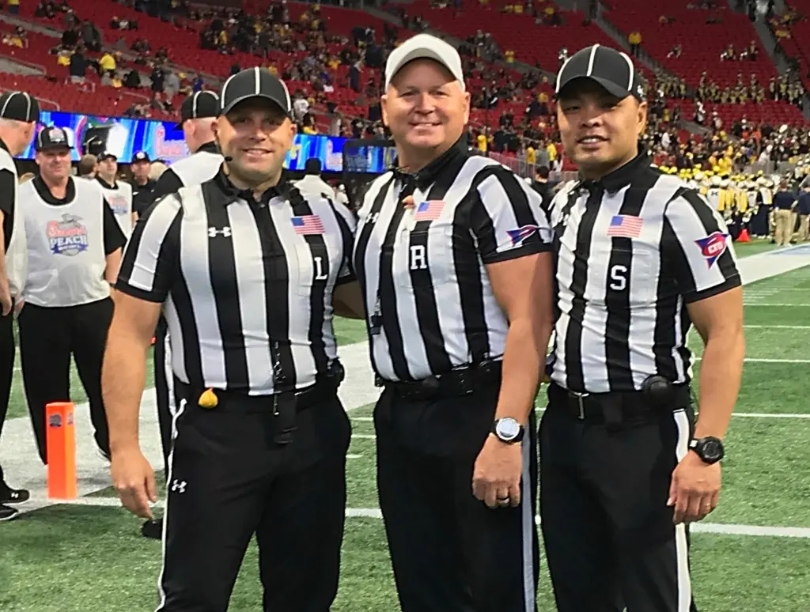

Toxicity in Online Sports-Related Communities
Introduction
 Football is considered by many to be “America’s sport”. The National Football League, the apex source of professional football, is one of the most popular television programs currently on the air, with an average audience of 16.7 million viewers per game (Adgate). Such a massive viewership, combined with a loyal, passionate fanbase, generates billions of dollars of revenue in merchandise, television rights, gambling, and sponsorships. One popular avenue for fan expression is in online discussion communities, where fans can discuss the latest scores, injuries, roster moves, and drama throughout the league. These forums, such as the r/NFL subreddit, provide a valuable insight into the fanbase’s current state.
Football is considered by many to be “America’s sport”. The National Football League, the apex source of professional football, is one of the most popular television programs currently on the air, with an average audience of 16.7 million viewers per game (Adgate). Such a massive viewership, combined with a loyal, passionate fanbase, generates billions of dollars of revenue in merchandise, television rights, gambling, and sponsorships. One popular avenue for fan expression is in online discussion communities, where fans can discuss the latest scores, injuries, roster moves, and drama throughout the league. These forums, such as the r/NFL subreddit, provide a valuable insight into the fanbase’s current state.
However, online communities, especially ones related to passionate topics–such as sports–are susceptible to polarization. This polarization can lead to clashes between users and cause toxicity, incivility, and chaos within the community. It is within the best interest of moderators, as well as league officials, advertisers, and stakeholders to ensure that discussion remains civil. Doing so allows communities to retain their intended purpose and serve as a reputable hub for discourse. This paper provides some insight and analysis into the behavior of online users of sports communities. Namely, it aims to answer the following questions: is toxicity and negativity prevalent in online sports-related discussions, why do people converse in online sports communities, and what is the motivation of users to participate in toxic, harmful discussion? I examine the r/NFL subreddit by running a large-scale data collection and artificial intelligence sentiment analysis on a set of 4,648 randomly selected comments posted on October 8th and 9th, 2023.
Methods
I used Reddit and the r/NFL subreddit as the source of all my primary research. I used my background in computer science to create a Python1 script that makes use of the Reddit API2 and Google Perspective3 API to download, filter, and analyze the comments. The r/NFL subreddit currently has 5.2 million members. I configured my code to use the PRAW (Python Reddit API Wrapper) library to fetch a list of 25 random “rising” posts, and then randomly select up to 500 comments from each discussion thread. This gave me a total of 4,676 comments. I then set up the Python Google API Client to send a request to Google’s Perspective API–a free service for developers to analyze attributes such as toxicity and profanity on text-based content on a large scale–for each comment. I used the toxicity, profanity, and insult models to give a score between 0 and 1 of the AI’s confidence that each individual comment meets the definition of toxic, profane, or insulting. I then made use of the Pandas4 library to filter and sort the analyzed comments. Comments that could not be analyzed (i.e. ones that did not have scores for their toxicity, profanity, or insults) were dropped from the dataset, resulting in a list of 4,648 comments. From there, I selected a list of the most and least toxic and insulting comments selected by the AI, and used the Seaborn and Matplotlib libraries to create charts for visualizations.
The methods I used in my research are similar to a large-scale analysis of fan sentiment on Twitter during the 2019 NBA Finals (Gong and Wang) as well as the 2014 World Cup (Yang and Wang). These studies also used random data collection methods using the official API for Twitter and used similar machine learning sentiment analysis methods. Large-scale analysis of textual content using machine learning allows researchers to accurately and efficiently draw conclusions based on a representative sample of the community’s discourse, as opposed to sorting through large amounts of raw data manually. Using this method will allow me to answer my research questions by helping me to find overall trends in the toxicity, negativity, and insultingness of subreddit comments, as well as quickly compile a list of comments that may be of further interest of exploration for case studies.
I used heatmaps and histograms created from my primary dataset to draw general conclusions about fan behavior, and manually selected a few comments from different viewpoints to highlight the trends present in the data. I also discuss the results and potential biases in this paper, the data collection methods, and the sentiment analysis.
Results
This section covers my findings based on the sentiment analysis of comments from the NFL subreddit. I start with the overall trends gathered from the dataset and related graphs, then hand-pick comments that fall into three general categories: player- and personnel-targeted toxicity, commenter-targeted toxicity, and constructive discussion.
Large-Scale Trend Analysis
I created a histogram5 of each sentiment attribute to determine the frequency of toxic, profane, and insulting comments.
Comments were considered “toxic”, “profane”, or “insulting” if their respective sentiment score was above 0.5 (50% confidence by the AI). 9.3% of all comments were considered toxic, 8.3% were considered profane, and 4.3% were considered insulting. Profane and insulting comments were less likely to occur than toxic comments. These trends also suggest that the vast majority of text content is not considered negative; 89.4% of all comments did not meet any of the thresholds for the three measured categories.
This figure shows the relative density of comments over time based on their toxicity score. Its purpose is to expose potential trends between the amount of toxic comments and the time of day. Comments were most common from the hours of 14:00 UTC6 to 20:00 UTC on October 9th. The frequency of both toxic and non-toxic comments increased during this interval, however the relative percentage of toxic comments did not change based on the time of day. Similar trends were also seen with the profanity and insult AI models. Density plots for profanity and insults were omitted for brevity.
Individual Comment Analysis
In this section, I hand-picked a few comments that met a certain threshold for profanity or toxicity (>90% confidence). I then grouped these comments into two categories: toxicity targeted towards players, coaches, and referees, and toxicity targeted towards other commenters. I also sampled comments that had a low toxicity score (<10% confidence) for comparison to highlight constructive, civilized posts.
Toxicity Targeted Towards Players or Other League Personnel
The first category of toxicity is for comments that have a negative connotation towards players, coaches, referees, or other representatives of the NFL. These comments are typically in relation to poor performance from their subject. Each comment scored exceptionally high in the toxicity model (>90% confidence).
Comment 1 “Russ is still ass and he put Denver in a shit situation because of that piece of shit overpaid contract” —u/AdStreet2074
Comment 2 “Fuck Sean Payton” —u/fradaaaa
31% of comments in the dataset that scored above a 90% toxicity confidence mentioned Sean Payton, the Broncos’ head coach. Denver’s blown lead to the winless Chicago Bears on October 1st was likely a controversial, heated topic for many football fans. Many of them turned to blaming Russell Wilson as well, due to his expensive contract and so-far subpar performance. These comments highlight the fact that fans tend to view the actions of one individual, typically starting players or the head coach, when their team performs poorly. Comments in this category may cause further toxic interaction between commenters depending on conflicting views of players and teams, and contribute to overall tensions in the discussion thread.
Comment 3 “And another refs assisted chiefs win. Y’all are some pigs in shit these days” —u/Animaldance24
 This specific comment represents a strong source of controversy in the sports world: referees and rules officials. As moderators of the game, they are given the difficult tasks of determining the result of ambiguous plays and giving penalties. These actions directly affect the game’s outcome and makes referees a target for toxicity and harassment.
Posts of this nature relate heavily to the concept of consumer and spectator rage. Consumer rage is “a complex and potentially disruptive response that emotionally charged patrons may exhibit as a reaction to extreme irritation and/or frustration created by a variety of interactive elements present in many service encounters” (Stephen et al. 14). Since sports can cause emotionally charged responses due to a fan’s emotional, financial, and time investments into players and teams, their poor performance may cause susceptible individuals to exhibit consumer rage, often turning them to online discussion forums as a more convenient outlet for such expression, as opposed to traditional in-person venues.
Toxicity Targeted Towards Other Commenters
Comment 4 “If you want to talk your shit, talk your shit, pimp. Just better back it up” —u/AcesCharles2
Comment 5 “God that’s hilarious considering you look like the idiot and we’re the only one to not recognize the clear joke. I know telling jokes with out being offended is rare ‘round those parts” —u/Trumpets22
Comment 6 “You shut your whore mouth” —u/canadianbroncos
Posts targeted towards other commenters seem to generally make use of simple insults, sarcasm, and profanity. This represents a separate type of discussion, not directly related to sports, and occurs when two or more users argue against each other. It may also be a way of indirectly expressing rage toward the sport, or expressing disapproval with an opposing viewpoint.
Productive Discussions and Anecdotal Comments
The following comments were randomly selected from a list of likely “non-toxic” comments (<10% confidence on AI toxicity model). Excerpts are included here to show examples of normal, civil discussion.
Comment 7 “Yup, [Aaron Rodgers] just returned from ACL injury to his left knee. Only took 2 plays to tear up his right knee. Devastating injury after all the hard work he put in rehabbing.” —u/TheRKC
Comment 8 “I feel like we might be overreacting to sub 200 yards and no TDs against the worst defense in the league. I mean he [Zach Wilson] does seem to have improved to the point were you could trot him out as a back up and not feel terrible. And he is a back up to be fair.” —u/GiovannisPersian
Comment 9 “I'm absolutely in for a Zach Wilson redemption arc. I always want to see players succeed, no matter who they play for.” —u/qhollis405
The vast majority of the comments from the dataset represent positive or neutral discussions. They seem to transcend the fan’s team identity and relate to problems in the league that are bigger than rivalries and opponents, such as injuries and player comebacks. Comment 8 highlights a more skeptical view towards the state of the Jets’ quarterback Zach WIlson, yet remains civil and avoids expressing hostile and negative emotions.
These “non-toxic” comments likely belong to long-time, active users who are invested in the subreddit’s community. These fans belong to the “tailgater” cohort of typical online sports users determined by Boyle et al in 2019. Tailgaters “treat sports forums as their online tailgate, where they can meet and socialize with other fans of their teams” (Boyle et al. 144) and serve as the basis for constructive discourse in the community.
Conclusion
The vast majority of online sports-related discussion appears to be civil, however a vocal minority of users express strong emotions and opinions using conduct that may be considered toxic and unproductive to group discussion. If left unchecked, this effect may compound and result in the destruction of the community. Generally, moderators should attempt to permit as much free discussion as possible while preserving the civility of the group. Additionally, moderators should make use of artificial intelligence tools to assist them with highlighting and managing extreme posts in a more efficient manner.
Online forum users tend to fall into three groups: tailgaters, trivia seekers, and bandwagoners. The majority of comments explored in this paper fell under the first category of tailgaters, wherein commenters socialize and interact with other fans as an outlet to discuss current league, team, and player events (Boyle et al. 144-149). This type of discussion best represents the intention behind the creation of open sports discussion hubs, and serves as the source of most productive, positive discourse in such communities.
Consumer Behavior Theory states that a person’s attitude toward a product or service includes their beliefs and feelings about it (Mumcu et al.). The principle of CBT can be applied to sports-related discussions on social media as an avenue to observe fan sentiment, and serves as an explanation to toxic behavior in online sports-related discussion boards. League officials and advertisers should monitor discussion in these communities and consider them when making decisions that affect league policy and partnerships. These groups can provide valuable insight into consumers’ thoughts and behaviors. Performing similar large-scale analysis on posted content can help to draw general trends about the sport’s fanbase.
It should be noted that this paper may not be applicable to all online sports communities, especially those belonging to other sports or leagues. There may also be inherent biases in the data collection and analysis methods due to quirks in Reddit’s API or Google’s machine learning model. This study only analyzed comments over the span of roughly 16 hours, and overall trends in discussion may change over time. The Reddit API does not return deleted comments, meaning that a disproportionate amount of toxic or insulting content may be missing from the analysis. Google’s Perspective toxicity, profanity, and insult models may have training biases or be unable to recognize certain types of content, such as sarcasm, content that has a different meaning given its context (i.e. parent comment), or short posts.
Reflection
Online communities are generally a very positive and safe place to have open discussions. However, the internet may amplify the voices of people with extreme opinions and comments, which draws more attention to negative and toxic comments. Sports are especially vulnerable to this occurrence, due to the emotional investments made by fans. Groups such as r/NFL provide a great place for football fans from all around the world to discuss the sport, but are still susceptible to compounding toxicity and attacks on others by emotionally-charged fans. Factors such as team performance, other comments, and the anonymity of the internet may all contribute to these scenarios. If left unchecked, it can lead to the creation of an echo chamber, where individuals united by a strong cause reinforce each other’s beliefs, often at the expense of civilized discussion, thus jeopardizing the overall positive and safe environment of online communities.
Rationale
I created a website for my essay because websites are a great way to effectively convey information to a large audience. The internet is very widely used throughout the world, and the topic of my essay is based on online interaction, so I can more easily target my intended audience of online moderators and stakeholders for professional sports leagues. Websites are also very flexible and allow for the integration of images, charts, and other figures to aid in the presentation of my research report. The graphs that I included in my essay are important to creating a sense of visual understanding, and help the reader more clearly understand the trends I found in the data. They are also great for accessibility and can still be conveniently accessed by users with vision and motor impairments. Additionally, using a website allows individual users to have more control with how they read and interact with the content. If they were reading the essay on a piece of paper or via a PDF, they would not be able to change the zoom level or contrast settings. However, with a website, the user's settings can be leveraged to provide a more personalized and accessible experience. They can also read it at their own pace, highlight and search interesting content, and visit cited linked content easily.
This particular website and its design were created by me from scratch. I did this because it allowed me to have ultimate control over fonts, colors, positions, and everything else on the website. It also serves as a good addition to a portfolio showcasing my work either for my major or for this class. The use of graphs and images helps communicate my findings and conclusion in new ways that can't be achieved in a typical monomodal essay.
Ultimately, websites provide an extra layer of control and accessibility for readers. They allow information to be easily transmitted to a wide audience. I believe that these aspects helped me achieve multimodality with my writing project.
Glossary
- Python: a programming language, often used for data analysis.
- API (“Application Programming Interface”): part of a website that allows it to communicate and share data with other applications.
- Google Perspective: a free AI tool created by Google intended to help moderators of online communities by flagging toxic, rude, and negative content. https://perspectiveapi.com/
- Pandas: a library (extension) of the Python programming language that facilitates data analysis.
- Histogram: a graph that shows the frequency of data, i.e. how it is distributed.
- UTC: Universal Time Coordinated; timezone.
Works Cited
Adgate, Brad. “The Audience Disparity Of NFL Games And Everything Else Widens.” Forbes, 12 January 2023, https://www.forbes.com/sites/bradadgate/2023/01/12/the-audience-disparity-of-nfl-games-and-everything-else-widens/.
Boyle, Kris, et al. “Virtual Tailgating: A Q-Methodology Analysis of Why Sports Fans Visit Online Sports Forums.” Journal of Sports Media, vol. 14, 2019, pp. 137-154. Project MUSE, https://muse-jhu-edu.eu1.proxy.openathens.net/article/735268.
Gong, Xi, and Yong Wang. “Exploring dynamics of sports fan behavior using social media big data - A case study of the 2019 National Basketball Association Finals.” Applied Geography, 2021. ScienceDirect, https://www.sciencedirect.com/science/article/pii/S0143622821000540.
Grove, Stephen, et al. “Spectator Rage as the Dark Side of Engaging Sport Fans: Implications for Services Marketers.” Journal of Service Research, vol. 15, no. 1, 2012, pp. 3-20. SAGE Journals, https://journals.sagepub.com/doi/pdf/10.1177/1094670511428166.
Mumcu, Ceyda, et al. “Examination of Women’s Sports Fans’ Attitudes and Consumption Intentions.” Journal of Applied Sport Management, vol. 8, no. 4, 2016, p. 25. Gale Academic OneFile, https://go.gale.com/ps/i.do?p=AONE&u=orla57816&id=GALE%7CA480030009&v=2.1&it=r&aty=sso%3A+shibboleth.
Yu, Yang, and Xiao Wang. “World Cup 2014 in the Twitter World: A big data analysis of sentiments in U.S. sports fans’ tweets.” Computers in Human Behavior, 2015, pp. 392-400. ScienceDirect, https://www.sciencedirect.com/science/article/pii/S074756321500103X.